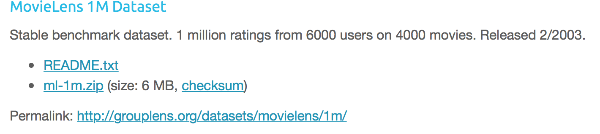
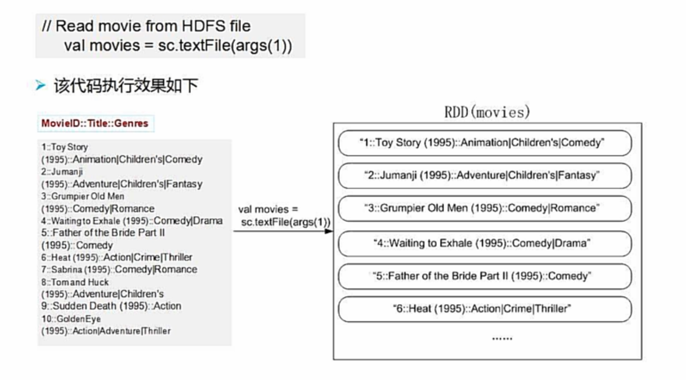
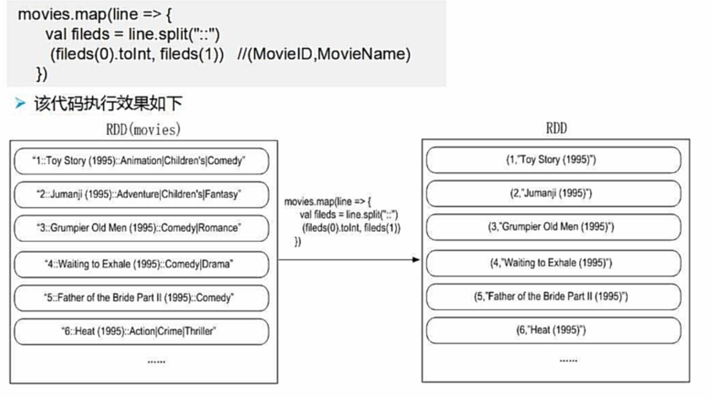
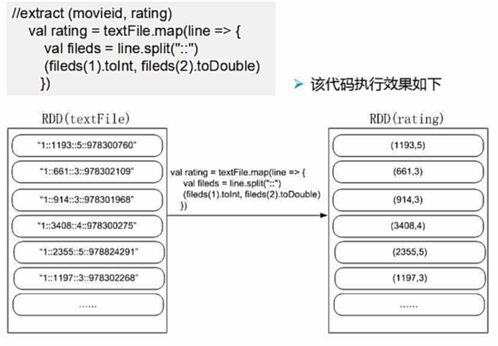

Spark实战：统计电影评分
Spark实战
任务介绍
计算3883部电影的1000209条（一百万条24M）评分信息的平均分并降序输出评分4以上的电影。
数据集（电影评分）
- 下载
https://grouplens.org/datasets/movielens/
选择1M版本

单击ml-1m.zip下载。
我们需要解压后的两个文件：
movies.dat 电影信息数据格式：
MovieID::Title::Genres
1::Toy Story(1995)::Animation|Children’sComedy
2::JumanJi(1995)::Adventure|Chidren’s|Fantasy
3::Grumpier Old Men(1995)::Comedy|Romedy|Dram
…Ratings.dat 评分信息数据格式：
UserID::MovieID::Rating::TimesTamp
1::1193::5::978300760
1::661::3::978302109
1::914::3::978301968
1::3408::4::978300275
1::2355::5::978824291
1::1197::3::978302268
1::1287::5::978302039
1::2804::5::978300719
1::594::4::978302268
1::919::4::978301368
1::595::5::978824268
1::938::4::978301752
…
输出格式
MovieID,Title,Rating
(1084,Bonnie and Clyde (1967),4.096209912536443)
(3007,American Movie (1999),4.013559322033898)
(2493,Harmonists, The (1997),4.142857142857143)
(3517,Bells, The (1926),4.5)
…
源码
1 | import org.apache.spark.{SparkConf, SparkContext} |
代码解析
初始化
1
2val conf = new SparkConf().setAppName(“MovieRank”).setMaster(“local”)
val sc = new SparkContext(conf)初始化RDD
1
2
3
4
5
6
7
8
9val movies = sc.textFile("URL").map(line => {
val fileds = line.split("::")
(fileds(0).toInt,fileds(1))
})
val rating = sc.textFile("URL").map(line => {
val fileds = line.split("::")
(fileds(1).toInt,fileds(2).toDouble)
})
将文件载入后过滤无用信息
movies RDD:
- 
-

ratingRDD：

- 求评分均值
1
2
val averageRating = rating.groupByKey().mapValues(x => x.sum/x.size)
groupByKey分组后使用mapValues操作只对值进行操作而不影响键
- 连接操作
1
val result = movies.join(averageRating).filter(f => f._2._2>4)
将两个RDD中键相同的值连接，例如
(1,”Toy Story(1980)”) jion (1,5.24) => (1,(“Toy Story(1980),5.24))
- 排序
1
.sortBy(_._2._2,false)
_为通配符，代表要操作的RDD中的元素(1,(“Toy Story(1980)”,5.24))
_._2取RDD元素的第二个值(“Toy Story(1980)”,5.24)
_._2._2取第二个值5.24
_._2._2即为评分值，sort默认升序排列，false改变为降序
再进行一步map操作将数据格式纠正
- 写入文件
result.saveAsTextFile(“URL”)输出结果
(3172,Ulysses (Ulisse) (1954),5.0)
(3881,Bittersweet Motel (2000),5.0)
(3656,Lured (1947),5.0)
(3233,Smashing Time (1967),5.0)
(3382,Song of Freedom (1936),5.0)
(3607,One Little Indian (1973),5.0)
(989,Schlafes Bruder (Brother of Sleep) (1995),5.0)
(1830,Follow the Bitch (1998),5.0)
(787,Gate of Heavenly Peace, The (1995),5.0)
(3280,Baby, The (1973),5.0)
(3245,I Am Cuba (Soy Cuba/Ya Kuba) (1964),4.8)
(53,Lamerica (1994),4.75)
(2503,Apple, The (Sib) (1998),4.666666666666667)
共370条记录
耗时
1529831966481-1529831962620=3861ms
2.7 GHz Intel Core i5
8 GB 1867 MHz DDR3